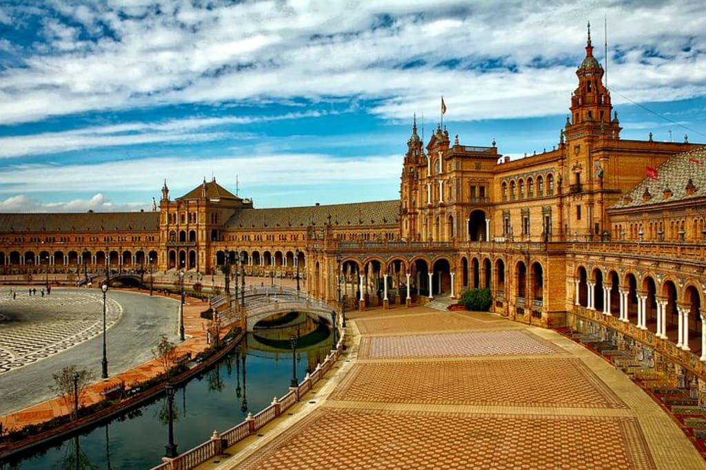

Mejor Gastranomía del Mundo
ESPAÑA
- Sobre España
- Cultura Culinaria
- Ingredientes Destacados
- Tradiciones
- Recetas Tradicionales Españolas
- Restaurantes Recomendados
Sobre España
Muy conocida por la música y el baile flamencos, las corridas de toros, las playas fantásticas y muchísimo sol, España tiene mucho másque ofrecer. Es uno de los centros culturales de Europa.  Referencia
Cultura Culinaria
A continuacion le invitamos a que escuche el audio sobre la Cultura Culinaria de Española
Los 5 ingredientes más usados en España
- Quesos
- Pimentón de la Vera
- Mariscos
- Turrones
- Croquetas
Tradiciones de España
La siesta:
Una de las tradiciones más conocidas de España es la siesta, que consiste en tomar una breve siesta después del almuerzo para descansar y recargar energías.
Tapas y pinchos:
Las tapas son pequeñas porciones de comida que se sirven como acompañamiento de las bebidas en los bares. Los pinchos, por otro lado, son pequeñas porciones de alimentos sobre una base de pan.
Flamenco:
El flamenco es una forma de expresión artística que combina música, canto y baile. Originario de Andalucía, el flamenco es considerado una de las tradiciones folclóricas más emblemáticas de España.
ReferenciaRestaurantes más Populares de España
- El Celler de Can Roca: ubicado en Girona, es considerado uno de los mejores restaurantes de España. Ha sido reconocido en varias ocasiones como el mejor restaurante del mundo por la revista Restaurant Magazine. Restaurante El Celler de Can Roca
- Martín Berasategui: situado en Lasarte, es otro de los mejores restaurantes de España. Es conocido por su cocina vasca y ha sido galardonado con varias estrellas Michelin. Restaurante Martín Berasategui
- DiverXO: ubicado en Madrid, es otro restaurante destacado en España. Es liderado por el chef Dabiz Muñoz y ha obtenido reconocimiento internacional por su cocina creativa y vanguardista. Restaurante DiverXO